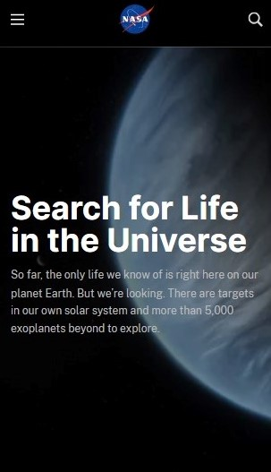

Visual Hierarchy
Webflow
https://webflow.com/
A visual hierarchy can be observed in this webpage, where larger elements tend to draw more attention compared to smaller ones, therefore emphasizing the significance of certain contents. Additionally, contrast in color and brightness is utilized to distinguish between different elements, which helps to create a clear visual hierarchy.
Rule of Thirds
NASA
https://science.nasa.gov/universe/search-for-life/ The rule of thirds is a technique used in graphic design to create visually appealing compositions. It involves dividing the image into a grid of three horizontal and three vertical lines, resulting in nine equal parts. The idea is to place the focal points of interest at the intersections of these lines or along them. On this web page, the image has been positioned so that the main subject falls along one of the vertical lines, and the text has been placed at the intersection of two grid lines to create a balanced and harmonious design.
White space and clean design
Apple
https://www.apple.com/This website provides us with a feeling of balance, clarity, and focus. The elements on the page are well-spaced with proper padding and margin, which gives the website a clean and organized look. Furthermore, the images are separated from the text and are correctly arranged, making the content easy to read and understand.